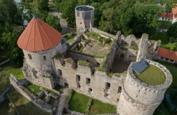

Cēsis
Šī pilsēta, kas atrodas gleznainajos Gaujas upes krastos, ir īsta pērle vēstures un dabas cienītājiem. Cēsu ielas ir piepildītas ar viduslaiku atmosfēru, padarot to par ideālu vietu romantiskām pastaigām un kultūras atklājumiem.

Populāras vietas!
Cēsu pils
